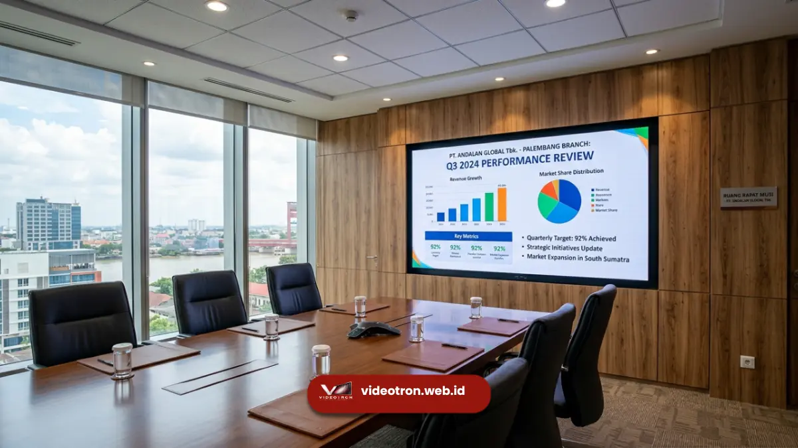

Videotron Palembang adalah layanan pengadaan layar LED outdoor dan indoor berkualitas tinggi untuk kebutuhan promosi, informasi, dan acara korporat di wilayah Palembang.
Poin Penting:
- Videotron Palembang mencakup layar LED outdoor dan indoor untuk kebutuhan bisnis, pemerintahan, dan acara publik.
- Pemilihan spesifikasi videotron memengaruhi kualitas gambar, ketahanan cuaca, dan efisiensi biaya operasional jangka panjang.
- Harga videotron di Palembang bervariasi tergantung ukuran, resolusi, dan lokasi pemasangan.
- Videotron banyak digunakan untuk iklan luar ruang, informasi publik, dan penunjang acara korporat di Palembang.
- Konsultasi kebutuhan sejak tahap awal membantu memastikan hasil pemasangan sesuai target komunikasi bisnis Anda.
Kota Palembang terus berkembang sebagai pusat bisnis dan pemerintahan di Sumatera Selatan, sehingga kebutuhan media komunikasi visual yang menarik perhatian publik juga meningkat. Videotron menjadi salah satu solusi paling efektif karena mampu menampilkan konten dinamis yang dapat diubah kapan saja, berbeda dengan baliho atau spanduk konvensional yang bersifat statis. Bagi pelaku usaha, instansi pemerintah, maupun pengelola gedung komersial, videotron menawarkan cara komunikasi yang lebih hidup dan terukur.
- 1. Apa Itu Videotron dan Mengapa Dibutuhkan di Palembang?
- 2. Jenis Videotron yang Tersedia untuk Kebutuhan Bisnis di Palembang
- 3. Faktor yang Memengaruhi Kualitas Tampilan Videotron
- 4. Berapa Estimasi Biaya Videotron di Palembang?
- 5. Di Mana Videotron Banyak Digunakan di Palembang?
- 6. Bagaimana Cara Menentukan Spesifikasi Videotron yang Tepat?
- 7. Kesalahan Umum dalam Pengadaan Videotron
Apa Itu Videotron dan Mengapa Dibutuhkan di Palembang?
Videotron adalah layar berbasis modul LED yang menampilkan gambar, video, atau teks secara digital dan dapat diperbarui kontennya secara berkala sesuai kebutuhan komunikasi. Di Palembang, videotron dibutuhkan untuk mendukung promosi bisnis, informasi publik, dan penguatan citra korporat secara visual.
Videotron tersusun dari ribuan titik lampu LED kecil yang membentuk piksel gambar. Semakin rapat susunan titik LED tersebut, semakin tajam dan detail gambar yang dihasilkan. Teknologi ini memungkinkan konten ditampilkan dalam bentuk gambar diam, video bergerak, running text, hingga integrasi data langsung seperti jadwal atau informasi cuaca.
Bagi pelaku bisnis di Palembang, videotron memberikan keunggulan berupa fleksibilitas konten. Materi promosi dapat diganti dalam hitungan menit tanpa perlu mencetak ulang media fisik, sehingga lebih efisien untuk kampanye musiman, program diskon, atau pengumuman acara. Instansi pemerintah juga memanfaatkan videotron untuk menyampaikan informasi layanan publik, imbauan, atau capaian pembangunan daerah kepada masyarakat secara luas.
Jenis Videotron yang Tersedia untuk Kebutuhan Bisnis di Palembang
Videotron untuk kebutuhan bisnis di Palembang umumnya dibedakan menjadi dua kategori utama, yaitu videotron outdoor dan videotron indoor, yang masing-masing dirancang sesuai kondisi lingkungan pemasangan.
Videotron outdoor dirancang dengan tingkat kecerahan tinggi serta lapisan pelindung tahan air dan debu, sehingga cocok dipasang pada fasad gedung, gerbang kawasan, atau area terbuka yang terpapar sinar matahari langsung dan cuaca tropis khas Palembang. Konstruksi modulnya juga memperhitungkan sirkulasi udara agar perangkat tetap stabil meski beroperasi dalam waktu lama.
Videotron indoor umumnya memiliki pixel pitch yang lebih rapat karena jarak pandang penonton cenderung lebih dekat dibandingkan videotron outdoor. Jenis ini banyak digunakan di lobi gedung perkantoran, ruang pertemuan, pusat perbelanjaan, hingga panggung acara korporat karena mampu menghasilkan gambar yang tajam dan warna yang akurat pada jarak dekat.
Selain kategori outdoor dan indoor, videotron juga dapat dibedakan berdasarkan bentuk instalasi, seperti videotron permanen yang terpasang tetap pada struktur bangunan, dan videotron modular yang dapat dibongkar pasang untuk kebutuhan acara sementara seperti pameran, konser, atau seremoni pemerintahan.
Faktor yang Memengaruhi Kualitas Tampilan Videotron
Kualitas tampilan videotron ditentukan oleh kombinasi pixel pitch, tingkat kecerahan, refresh rate, dan kualitas material modul LED yang digunakan pada layar tersebut.
Pixel pitch, yaitu jarak antar titik LED, menjadi faktor utama yang memengaruhi ketajaman gambar. Semakin kecil angka pixel pitch, semakin rapat susunan titik LED sehingga gambar terlihat lebih halus, terutama saat dilihat dari jarak dekat. Untuk videotron outdoor dengan jarak pandang jauh, pixel pitch yang lebih besar masih dapat menghasilkan tampilan optimal dengan biaya yang lebih efisien.
Tingkat kecerahan atau brightness turut menentukan keterbacaan konten pada siang hari, khususnya untuk instalasi outdoor yang terkena sinar matahari langsung. Videotron dengan brightness yang memadai memastikan konten tetap terlihat jelas meski dalam kondisi cahaya terik.
Refresh rate memengaruhi kenyamanan visual, terutama saat konten videotron ditangkap melalui kamera atau ditayangkan dalam video dokumentasi acara. Refresh rate yang tinggi meminimalkan efek kedip atau garis pada hasil rekaman.
Kualitas material modul, termasuk lapisan pelindung dan sistem pendingin, turut menentukan daya tahan videotron dalam jangka panjang, terutama pada iklim tropis dengan kelembapan tinggi seperti di Palembang.
Berapa Estimasi Biaya Videotron di Palembang?
Estimasi biaya videotron di Palembang dipengaruhi oleh ukuran layar, resolusi atau pixel pitch, jenis instalasi outdoor maupun indoor, serta kompleksitas struktur pemasangan di lokasi.
Selain harga unit, biaya videotron juga mencakup komponen pendukung seperti struktur rangka, sistem kelistrikan, kontroler tampilan, hingga biaya instalasi dan pemeliharaan berkala. Pembahasan lebih rinci mengenai faktor-faktor yang memengaruhi harga videotron dapat dibaca pada artikel harga videotron Palembang untuk membantu Anda menyusun estimasi anggaran secara lebih akurat.

Di Mana Videotron Banyak Digunakan di Palembang?
Videotron di Palembang paling banyak digunakan pada fasad gedung perkantoran, pusat perbelanjaan, kawasan bisnis, serta area publik yang menjadi titik kumpul masyarakat dengan lalu lintas tinggi.
Gedung perkantoran dan kawasan bisnis memanfaatkan videotron untuk memperkuat identitas korporat sekaligus menampilkan informasi layanan kepada klien maupun pengunjung. Pusat perbelanjaan menggunakan videotron untuk promosi produk, informasi acara, dan pengumuman penting kepada pengunjung mal secara real time.
Instansi pemerintah daerah juga memanfaatkan videotron di ruang publik untuk menyampaikan informasi layanan masyarakat, capaian program pembangunan, hingga imbauan resmi.
Selain instalasi permanen, videotron modular kerap disewa untuk mendukung acara korporat, seminar, pameran, maupun seremoni resmi yang berlangsung dalam waktu terbatas.
Bagaimana Cara Menentukan Spesifikasi Videotron yang Tepat?
Menentukan spesifikasi videotron yang tepat dimulai dari memahami lokasi pemasangan, jarak pandang audiens, jenis konten yang ditampilkan, serta anggaran yang tersedia untuk investasi jangka panjang.
Lokasi pemasangan menentukan apakah videotron outdoor atau indoor yang lebih sesuai, sekaligus memengaruhi kebutuhan tingkat kecerahan dan proteksi terhadap cuaca. Jarak pandang audiens menjadi acuan dalam memilih pixel pitch, karena videotron yang dilihat dari jarak jauh tidak memerlukan pixel pitch serapat videotron yang dilihat dari jarak dekat.
Jenis konten yang akan ditampilkan, baik berupa gambar statis, video promosi, maupun data informasi real time, juga memengaruhi kebutuhan refresh rate dan kapasitas kontroler tampilan. Terakhir, anggaran yang tersedia perlu diselaraskan dengan kebutuhan fungsional agar investasi videotron memberikan nilai jangka panjang yang optimal bagi bisnis maupun instansi Anda.
Kesalahan Umum dalam Pengadaan Videotron
Kesalahan umum dalam pengadaan videotron meliputi kurangnya perhitungan jarak pandang, mengabaikan kondisi lingkungan pemasangan, serta tidak mempertimbangkan kebutuhan perawatan jangka panjang.
Salah satu kesalahan yang sering terjadi adalah memilih pixel pitch tanpa mempertimbangkan jarak pandang audiens, sehingga hasil investasi tidak sesuai kebutuhan visual sebenarnya. Kesalahan lain adalah mengabaikan kondisi lingkungan, seperti tingkat kelembapan dan paparan sinar matahari langsung, yang dapat memengaruhi daya tahan videotron outdoor apabila spesifikasi proteksinya tidak memadai.
Banyak pihak juga kurang memperhitungkan kebutuhan perawatan dan dukungan teknis pasca pemasangan, padahal videotron memerlukan pemeliharaan berkala agar performa tampilan tetap optimal dalam jangka panjang.
Videotron Palembang menjadi solusi komunikasi visual yang relevan bagi bisnis, instansi, dan penyelenggara acara yang ingin menyampaikan pesan secara dinamis dan menarik perhatian publik. Pemilihan jenis, spesifikasi, dan lokasi pemasangan yang tepat akan menentukan efektivitas videotron dalam jangka panjang.
Untuk mendapatkan rekomendasi spesifikasi videotron yang sesuai dengan kebutuhan dan anggaran bisnis Anda di Palembang, konsultasikan kebutuhan Anda bersama tim vendorvideotron.web.id sekarang dan wujudkan tampilan display korporat yang lebih profesional.

Hawa Nadira
LED Technology Consultant dan Visual Educator
Konsultan dan spesialis solusi display digital berdedikasi tinggi yang fokus membagikan panduan edukatif mengenai penerapan teknologi layar LED videotron untuk kebutuhan interior modern di Indonesia.